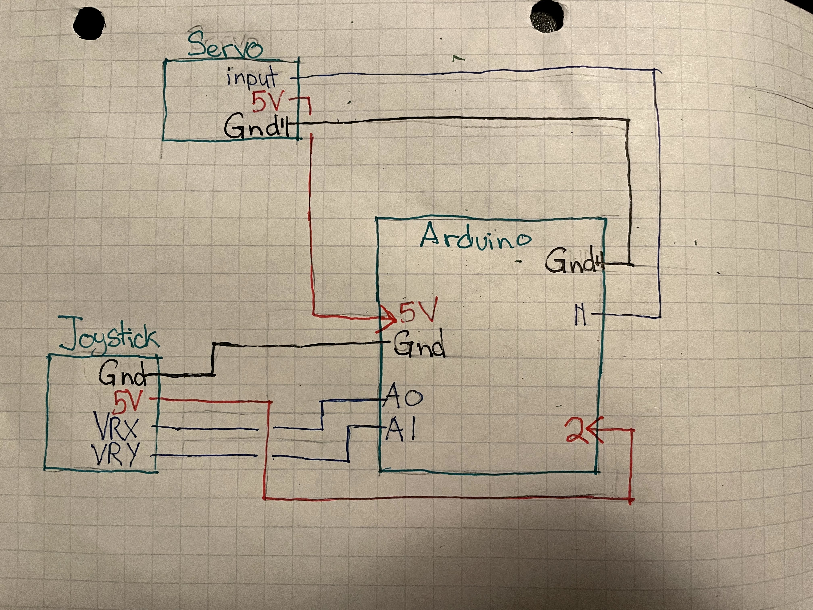
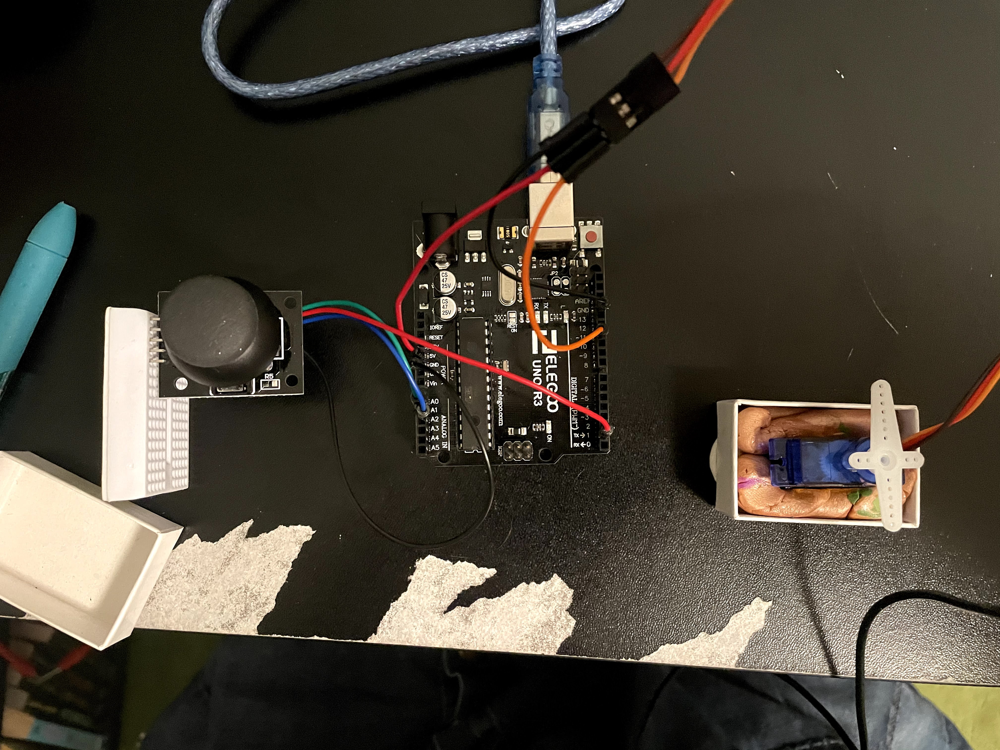
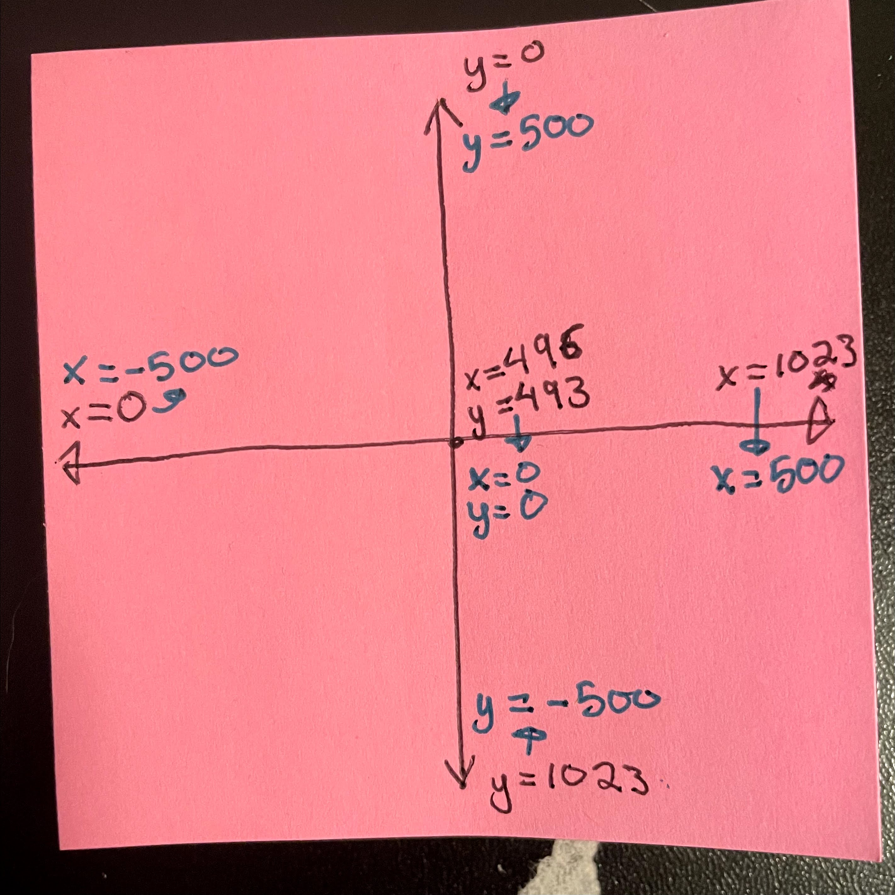

Assignment 4: Libraries!
A servo motor moves to the same angle a joystick is pointing
I used code from the slides about servo motors and joysticks as a base.
The Schematics

There were two items I needed to connect to my arduino: the joystick and the servo motor. Both needed 5 volts, but I only had one pin of 5volts. I decided to use pin 2 as another 5 volt output, by setting pin 2 to output, and setting it on high the whole time.
The Wiring


Because of the way the joystick connects to a breadboard, I decided to use the mini breadboad. That way I wouldn't have to hold the entire breadboard sideways to use the joystick. I didn't need the button abilities of the joystick, so I didn't wire that up.
The Math

The main challenge was converting the x and y values from the joystick to angles the servo motor could use. When the joystick is resting at neutral, x and y were in the 490s, which whas surprising considering the middle value between 0-1023 (the range of possible outputs) is 511. First, I shifted the x and y values so that the center values would be 0,0. I also had to flip the y value, because when the joystick pressed forward, y was smaller than the center, not bigger.With the values now centered, I could take the inverse tangent of y/x to get a value in radians. I then converted the angle into degrees: angle * 180 / PI. from there, we run into a different problem. inverse tangent only gives values between -90 - 90 degrees, and a negative value doesn't work for the servo. thats why, if the angle is negative, I changed it to 180 - 90. That final value could then be sent to the servo motor.
The Code
int x = A0; // Set up x values to come from A0 int y = A1; // Set up y values to come from A1 // these values are doubles so that when I divide them later, that value is a double double xval = 0; // initialize x values double yval = 0; // initialize y values int xcenter; // Set up the x value when the joystick is neutral int ycenter; // Set up the y value when the joystick is neutral double angle = 0; // initialize the angle in radians #include// include the servo library Servo myServo; // create a servo object void setup() { myServo.attach(11); // attaches the servo on pin 11 to the servo object pinMode(2, OUTPUT); // Set up pin 2 as an output digitalWrite(2 , HIGH); // set pin 2 to HIGH, to be a 5 volt source for the joystick xcenter = analogRead(x); // calibrate the joystick's neutral x value ycenter = analogRead(y); // calibrate the joystick's neutral y value } void loop() { xval = analogRead(x) - xcenter; //convert the x reading to a context where x-center is 0 yval = ycenter - analogRead(y); //convert the y reading to a context where y-center is 0, // and where pointing forward gets a positive value if(xval == 0) { // the converted x value is 0, angle = PI / 2; // then the radian angle is pi / 2 (to avoid a divide by 0 issue) } else { //otherwise, angle = atan(yval/xval); //take the inverse tangent to find the angle in radians } angle = angle *180/ PI; //convert the angle to degrees if(angle < 0){ //if the degree is negative angle = 180 + angle; // convert it to an appropriate value } angle = constrain(angle,0,180); //just in case, make sure the angle is within the 0-180 bounds myServo.write(angle); //write the angle to the servo delay(200); //delay 200 milliseconds }
The Gif

As I play with the joystick, the servo mimics the angle.